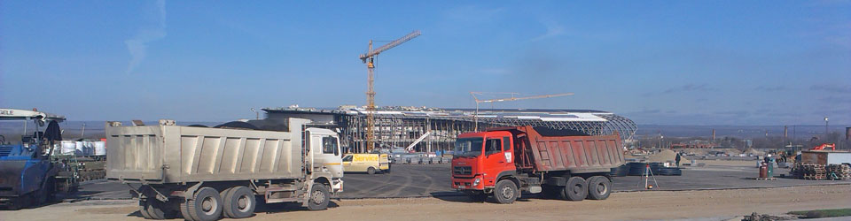
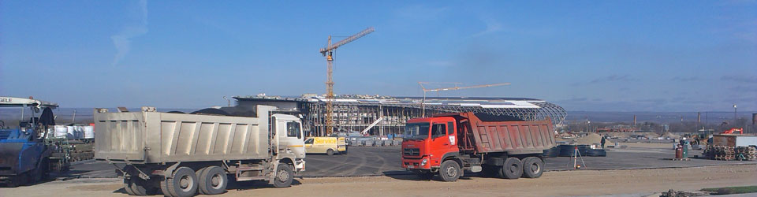

Отделочные работы.
К отделочным работам относятся : |
Облицовочные работыЭто работы , связанные с покрытием лицевых поверхностей конструкций штучными изделиями из естественных или искусственных материалов . Облицовочные работы бывают внутренними и наружными . Наружные работы - это облицовка фасадов зданий и сооружений плитами , лицевым кирпичом , керамическими камнями и т.д. Внутренние работы - это облицовка стен , полов и потолков декоративной фанерой , керамической и пластмассовой плиткой , бумажно-слоистым пластиком и др. |
Штукатурные работыЭто работы по отделки поверхностей зданий и сооружений строительной штукатуркой (штукатурным раствором либо листами сухой штукатурки) . Штукатурные растворы бывают : известково-гипсовые , цементные и известково-цементные . Сухая штукатурка бывает : гипсовая , гипсоволокнистая , древесноволокнистая и др. |
Покрытие полов.По виду покрытия полы различают на : монолитные (сплошные) - цементно-бетонные , асфальто-бетонные , мастичные , ксилолитовые , земляные , глинобитные и т.д. ; из листовых или рулонных материалов - линолеум , синтетические ворсовые покрытия , сверхтвёрдые древесноволокнистые плиты и т.д. ; из штучных материалов - паркет , доски , брусчатка , керамическая плитка , клинкерный кирпич , металлические плиты и др. |
Малярные работыЭто работы , связанные с нанесением окрасочных составов на поверхность конструкций зданий и сооружений с целью придания им красивого внешнего вида , увеличения срока службы и улучшения санитарно-гигиенических условий в помещениях . Малярная окраска может быть клеевым , масляным или синтетическим составом. |
Обойные работыЭто работы , связанные с внутренней отделкой поверхностей стен и перегородок обоями , линкрустом или синтетическими плёночными материалами . |
Стекольные работыЭто работы , связанные с остекленением световых проёмов (окон , дверей , витрин , световых фонарей и т.п.) в зданиях и сооружениях. |